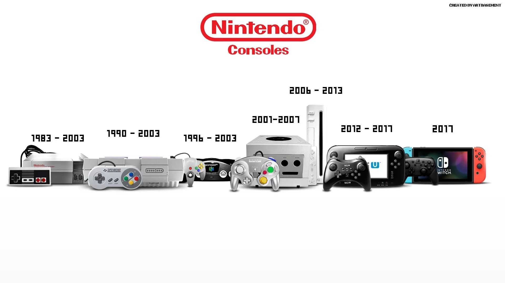

A indústria dos games é relativamente jovem, mas sua evolução foi meteórica. Tudo começou com experimentos científicos e evoluiu para um mercado bilionário, impulsionado por inovações em hardware e software.
Nos anos 50 e 60, jogos como **Tennis for Two** e **Spacewar!** eram demonstrações de tecnologia em computadores acadêmicos. Eles mostraram que máquinas podiam ser usadas para mais do que apenas cálculo. A década de 70 marcou o início da indústria comercial com o sucesso do jogo **Pong** nos arcades.
O lançamento do **Magnavox Odyssey** e, posteriormente, do **Atari 2600** levou os jogos para dentro das casas, criando o mercado de consoles domésticos. A indústria sofreu uma crise no início dos anos 80, mas foi revitalizada com a chegada do **Nintendo Entertainment System (NES)**.
A partir dos anos 90, a tecnologia 3D revolucionou o design de jogos, e a internet permitiu a ascensão do multiplayer online. Hoje, o mercado é dominado por jogos para PC, consoles, e principalmente, celulares. Tecnologias emergentes como **Realidade Virtual** e **Inteligência Artificial** prometem novas revoluções na forma de jogar.
